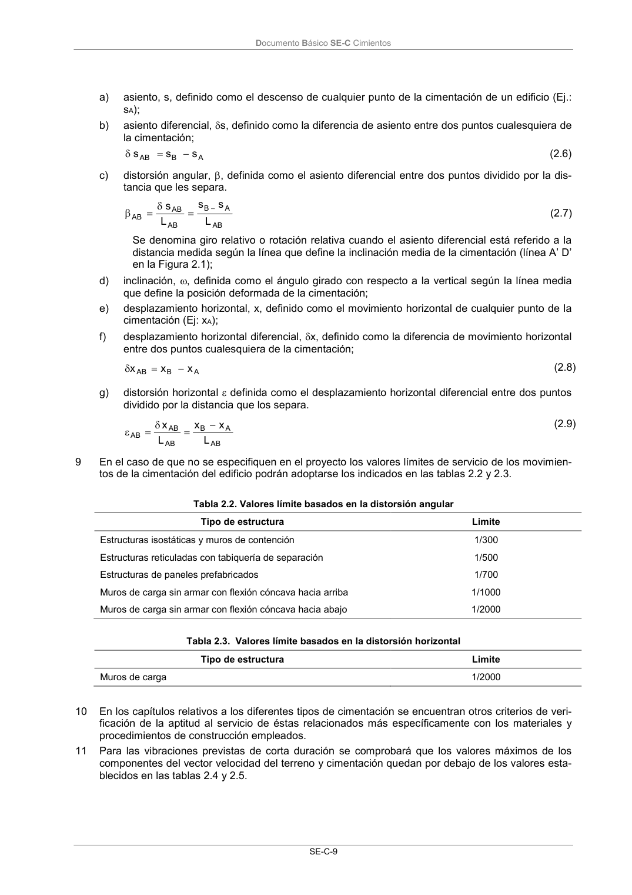

DB-SE-C · Página 14 · versión 2019-12-20
SHA256: a71133f4b0dca253e45ea3071c70f2a512354bcc5cd841bf89b1a502f567ac5e · página física 14 de 165 · métodos de encabezado
solo si están cotejados.
Formatos: Markdown · JSON de bloques · PDF p. 14 · imagen PNG
Documento Básico SE-C Cimientos
SE-C-9
a)
asiento, s, definido como el descenso de cualquier punto de la cimentación de un edificio (Ej.:
sA);
b)
asiento diferencial, s, definido como la diferencia de asiento entre dos puntos cualesquiera de
la cimentación;
A
B
AB
s
s
s
(2.6)
c)
distorsión angular, , definida como el asiento diferencial entre dos puntos dividido por la dis-
tancia que les separa.
AB
A
B
AB
AB
AB
L
s
s
L
s
(2.7)
Se denomina giro relativo o rotación relativa cuando el asiento diferencial está referido a la
distancia medida según la línea que define la inclinación media de la cimentación (línea A’ D’
en la Figura 2.1);
d)
inclinación, , definida como el ángulo girado con respecto a la vertical según la línea media
que define la posición deformada de la cimentación;
e)
desplazamiento horizontal, x, definido como el movimiento horizontal de cualquier punto de la
cimentación (Ej: xA);
f)
desplazamiento horizontal diferencial, x, definido como la diferencia de movimiento horizontal
entre dos puntos cualesquiera de la cimentación;
A
B
AB
x
x
x
(2.8)
g)
distorsión horizontal definida como el desplazamiento horizontal diferencial entre dos puntos
dividido por la distancia que los separa.
AB
A
B
AB
AB
AB
L
x
x
L
x
(2.9)
9
En el caso de que no se especifiquen en el proyecto los valores límites de servicio de los movimien-
tos de la cimentación del edificio podrán adoptarse los indicados en las tablas 2.2 y 2.3.
Tabla 2.2. Valores límite basados en la distorsión angular
Tipo de estructura
Limite
Estructuras isostáticas y muros de contención
1/300
Estructuras reticuladas con tabiquería de separación
1/500
Estructuras de paneles prefabricados
1/700
Muros de carga sin armar con flexión cóncava hacia arriba
1/1000
Muros de carga sin armar con flexión cóncava hacia abajo
1/2000
Tabla 2.3. Valores límite basados en la distorsión horizontal
Tipo de estructura
Limite
Muros de carga
1/2000
10
En los capítulos relativos a los diferentes tipos de cimentación se encuentran otros criterios de veri-
ficación de la aptitud al servicio de éstas relacionados más específicamente con los materiales y
procedimientos de construcción empleados.
11
Para las vibraciones previstas de corta duración se comprobará que los valores máximos de los
componentes del vector velocidad del terreno y cimentación quedan por debajo de los valores esta-
blecidos en las tablas 2.4 y 2.5.
